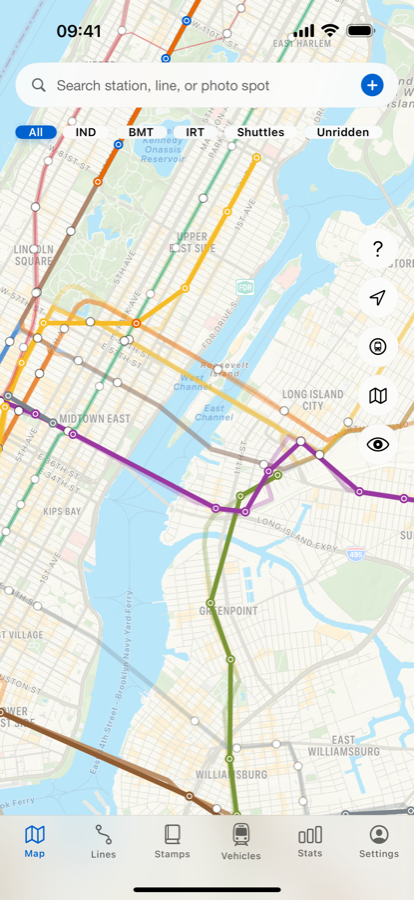
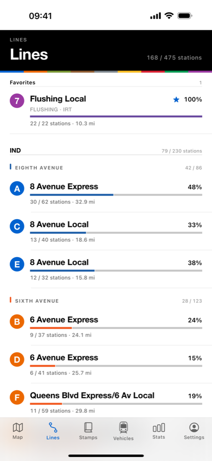
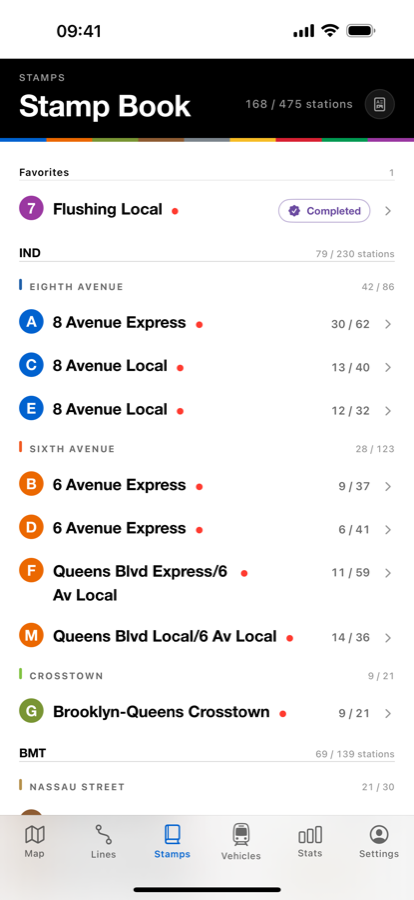

记录车站后，路线会以实际路线色填满。以前搭过的记录也能选日期补上。

不需打卡，不追 GPS。在月台上或一个月后，想记录时再记录。
每站点一下，或选好起讫站一次登录整段。
实际轨道上会被路线色填满。搭完整条路线就会产生纪念卡。
路线色、站名与轨道形状全部直接取自 MTA 公开的 GTFS 数据，与驱动车站到站显示器的是同一份数据。


真实地图，以及只留下地铁、其余全部拿掉的路网查看。
显示你实际去过哪里、还没去哪里的热点图。
搭完一条路线，就会得到印有该路线的卡片。
每次车站记录都能附加。照片只留在你的设备上。
从 R32 Brightliner 到 R211。记录搭过与看过的车辆。
所有用户免费。换手机记录也不会消失。
纽约地铁乘坐记录应用程序。收录全部25条路线・475个车站，可加照片与笔记，并以 MTA 官方路线色绘制地图。